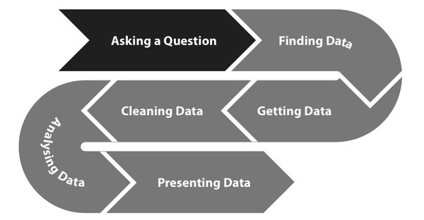
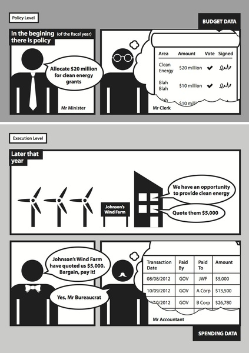
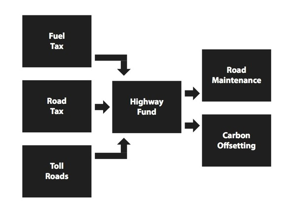

The Data Processing Pipeline
The Spending Data Handbook is addressed to people and organisations who want to use and understand government budgets and spending data in their work. These groups may include government oversight and accountability groups, issue oriented advocacy organisations, journalists covering the latest round of budget cuts or austerity measures, or citizens who just want to inform themselves on what their government is spending. The truth is that for many countries, it's never been easier to access the underlying data relating to government budgets and spending and the expectations have never been higher for governments to release this information in a timely manner. But once you've got the information, making sense of it can be daunting.
Irrespective of which kind of user is approaching this data, they all have one thing in common: they need to manipulate, analyse and interpret data in their work. Increasingly, we are bombarded with statistics and figures from governments and political parties and it is the job of these organisations to scrutinise and fact-check them, as well as come up with alternative models and solutions. This requires timely, data driven analysis.
If these groups think that "topic-driven analysis" can drive positive change within governments, there is another group at whom this book is addressed: a strange race of people who self-identify as "civic hackers" and think that technology can be put to work to make government as easy, accessible and effortless for citizens as the internet. While these groups use data processing tools in their day to day lives, their focus is often on enabling others to act on information, rather than having a particular advocacy aim themselves (though there are a few notable exceptions to this rule).
The range of topics tackled by these groups is so diverse that it would be impossible to address all of the questions and issues in one humble book. However, there are some overarching principles and helpful techniques which apply universally to working with government financial data and particularly, how technology might help to do so. This book aims to highlight areas where civic hackers, citizens, Civil Society Organisations (henceforth CSOs), and civil servants working in the field of government transparency could combine forces to achieve common aims. Like the Open Data Handbook (http://opendatahandbook.org/en/), it will be available as a continually evolving, open, educational resource on the internet.
The Data Processing Pipeline
The book was started at a four day book sprint bringing together organisations from around the world from both a technical and a CSO background. Representatives from the Open Knowledge Foundation (UK), Fundar (Mexico), the Centre for Budget and Governance Accountability (India), the Public Interest Advocacy Centre (Bosnia and Herzegovina), and the Sunlight Foundation (US) contributed to the original document. The Book Sprint was facilitated by Adam Hyde, founder of the Book Sprint method and www.booksprints.net.
As people who work with this data, we know better than anyone that a few years of a handful groups spreading awareness of spending data to the general public has not been sufficient for enacting earth-shattering change in the budgetary policies and processes in governments around the world. While it's true there's more spending data available than ever before, these efforts have proven to be superficial in some cases and the budget processes themselves have not become much more transparent or participatory.
Conversely, the armchair auditors that were expected to emerge from the citizenry never really materialised. The notion of citizen auditors and engaging with citizens on an individual and collective basis still struggles to make headway. Clearly, we need to take solutions to this problem to the next level. More groups need to be more involved than ever before.
This book is released under a Creative Commons attribution licence, meaning that anyone is free to use and reuse the material provided that it is attributed to the Spending Data Handbook. You can help by doing one of the following:
We've outlined some ambitious goals for this book, but you don't have to go it alone! In this section we focus on how to work with other organizations to create powerful advocacy efforts, all driven by hard fiscal data! Every CSO, not just government transparency organizations, can leverage the information in this book. Government spending data touches issues covered by a variety of organizations and journalistic outlets, such as human rights, the environment, poverty, scientific research, education, economic policy, and more. But not all these groups may realize it's importance.
A common observation has been that CSOs, journalists, and other groups that work with a lot of data encounter a set of similar problems. The problems typically include lack of technical knowledge, duplication of work, lack of wide dissemination of analysis and results, and creating compelling visual products. A lot of these challenges could be mollified if proper channels of communication existed between these organizations.
One of the most important ways to reduce these technical barriers is to maintain an active dialogue and a process of sharing the methodologies and underlying data in analysis you produce. You can avoid the mistakes of your predecessors by reading their methodologies and learning about idiosyncrasies in the data. Or you may be able to point out mistakes another organization has made. Similarly, if you document how your data has been processed and analyzed, other organizations can benefit (more about that in a few chapters).
Creating communication can be as easy as joining or maintaining a mailing list of groups that work on similar topics or leverage similar data in their work products. Most webmail services offer free group or mailing list functions, such as Google Groups or Yahoo Groups. If you maintain one, be responsive to messages and active in recruiting members. Email is an extremely low barrier for starting a conversation between organizations.
If you've already got data products that you want to share, try disseminating them in a couple of different ways. In addition to the methods outlined above, try preparing primers or manuals for other groups that want to start working with datasets that you may be particularly experienced with. You can also organize workshops, meetups, and webinars to familiarize groups with the data you work with. If grassroots issue groups can internalize your data products and present them in a contextually relevant way to their user base, then both groups have gained something from the partnership.
Another good way to facilitate knowledge sharing and communication between organizations is by conducting internship programmes for interested individuals and organisations. However it is important to keep in mind the target groups. It's great to interface with similar spending data focused groups working at different levels of government than your own, but identifying groups that work on completely different issue areas is important. These groups may feel incapacitated to enact change in the fiscal policy as it relates to their own issues. It then becomes an important job for spending data groups to identify and offer their support. It's especially important to establish strong links with groups that serve those minority populations who are often marginalized in government spending priorities.
The kind of collaboration discussed above can result in a much broader and stronger coalition of organizations that can advocate for fiscal transparency and detailed disclosure of spending data at all levels of government.
We've discussed that it's important for CSOs, journalists, and other groups to work together and it's likely that you won't bump up against too much resistance to this idea. But what about when you get pushback from the government even after you've built a strong coalition to advocate for better access to data? Well, one answer you can give them is "Government darling, you're only hurting yourself".
Whenever the word 'transparency' is mentioned, the first thought that usually springs to mind is a bright light being shone into dark corners of government offices, trying to expose the dark secrets of corrupt bureaucrats and inefficient expenditure. What is often overlooked is that governments also often stand to benefit from more transparent publishing practices. Not only does proactive disclosure help save on the time and cost associated with increased Freedom of Information requests, but other governments within the same nation can benefit from each other as well.
Money at the federal level is often transferred to local governments in the form of grants, direct payments or formula payments. When sub-national governments have better, more timely information on national budgeting priorities, it allows them to adjust their own budgets to account for cuts or increases in certain programs. Similarly, many local governments have small staffs and rely on revenue estimates and models at the federal level to estimate their own revenue.
This underscores the need for a consistent, standardized information sharing across governments, as it would allow them to share models, best practices, and software with each other, instead of custom building everything from scratch. Furthermore, it would allow for cross-checks on both the federal side and local side for data auditing purposes.
The next section highlights a couple of case studies for CSOs to use when trying to convince their government to publish better data.
Transparency to combat lag-times for Governments in British Columbia
When the province of British Columbia built a data portal (http://www.data.gov.bc.ca/), its motivations were primarily:
Probably one of the less-expected impacts was seeing how civil servants themselves used the portal. In 2012 approximately one third of all the traffic originated from government computers. The technology enabled faster access to relevant data within the government departments, contributing to better collaboration on policies that required fiscal data. There was also about 20% increase in the number of Freedom of Information (FoI) requests, showing that releasing a small amount of data fuelled wider interest in data.
It is somewhat terrifying to think that a lot of budgeting decisions could made almost entirely in the dark. As soon as one executive budget proposal is finalised and published, work often begins on producing the next one. Within governments, those who have to draw up the next year's plan need access (and quickly) to information, such as actual quarterly expenditures, in order to work out whether a government department is properly resourced from the outset, or is drastically under or over spending.
International Aid Transparency Initiative (IATI)
Building on around 20 years of previous work, the first version of the International Aid Transparency Initiative (IATI) standard was launched in early 2011 and aid donors around the world started publishing to it. The IATI specification documents data about both aid donors and aid activities, enabling comparison and encouraging good practice in data management. The IATI standard also includes space to attach relevant documents and details of project results, to allow the standard to build context around the data and become an end-to-end solution, tracking projects from inception to execution.
The IATI standard has seen far greater uptake than any previous effort in terms of organisations electing to publish their data in a standard format. These successes are often attributed to the multi-stakeholder nature of the design process, including both policy makers and technical experts. From 2009 to 2010, IATI consulted with a wide range of stakeholders on the design of the technical standard, alongside a parallel process to secure donor support for publishing their aid information.
In the past it was common to respond to information shortages by building a new database. But by working with open data principles, IATI allows a more distributed solution - where information can flow between organisations in many different ways, not just into a central database.
The benefits of this approach have already been demonstrated, with many CSOs and charities choosing to follow the IATI Standard, although it was developed primarily with governments in mind.
Donors publish aid information as a feed which can be read by many different applications, including those created by other donors, by the open data community, and - importantly - by software providers that are developing country financial systems. By providing aid information in a standard format, many different users can access the data in the way they need to - and developing countries can see the resources, which are supposed to be flowing to them.
At present, no. The way many governments report their financial data is a function of how their budget process works or how they use their accounting software. This may not even be consistent within a government, but vary by department and sub-department.
Could it be useful to create one? We suspect so. The IATI standard for the first time is enabling people to track the money across country boundaries, something which is almost impossible with other types of expenditure, but crucial for those whose job is oversight of government activities and accountability bodies, such as those who work to prevent international money laundering and corruption.
We are now in a phase where many governments around the world are proactively publishing documents about what they plan to spend (budgets) and actually spend (spending data). Increasingly, this material is available on the internet, so that anybody can access it at any time. Still, too much of the information is released in the form of 'documents' rather than 'data'. Ideally we need both so that inforamtion can be analyzed, re-used and understood. This chapter is a quick overview of some of the raw inputs required for data-driven advocacy and how it works in practice.
When we speak about data, what we usually refer to is the notion of machine-readable (http://en.wikipedia.org/wiki/Machine-readable_data) data. Many of the formats most commonly used for policy papers and long-form reports published by most policy-making institutions are PDF files, Word documents, web pages or closed interactive infographics - do not structure information in a way that lends itself to automated analysis and extraction.
Such documents are formatted for humans (or printers) to interpret, and it can be hard (and in many cases nearly impossible) for a machine to re-construct the elements in the presentation.
Other formats, such as Excel and CSV files contain a higher level of structured information. For example, in an Excel file you can mark a number of cells and easily calculate their sum. Even more exotic and useful file formats, such as XML documents, JSON APIs or Shapefiles may not have easy-to-use viewer applications. You can think of them as the glue that connects different systems on the web, so that different databases can work together in a seamless fashion.
What asking for machine-readable bulk data means for CSOs is simple: you won't have to spend a lot of time manually extracting data from reports into spreadsheets to be able to filter, sort and analyse it - a process which is both time-consuming and can introduce errors.
In the next section 'Getting Data' - we will deal with asking governments for data (or getting it via other means). To set the scene for this and to work out whether your government actually publishes usable data already, have a quick look at the following questions:
Is going out and provoking a riot the best way to get a Government to take onboard your message? There are alternatives: hit them with the data hammer instead!
Making evidence-based policy proposals consists from three major phases: formulating your assumption, analysis (which often leads to re-formulating your assumption, and presenting your data in an engaging way in a policy proposal.
Asking the right question is key to getting the most out of your data. We all make assumptions, and our organisation may have a particular standpoint on a given issue. Our first task is always to formulate our assumptions and then interrogate them ferociously. Although we try to be rational in this process, our judgement is often influenced by our subjective goals, values, and beliefs. Sometimes, you'll need to revisit your assumptions several times over to ensure they are valid and you can back them up with data. Once you know your policy problem is definitely a problem, you can work to package it in a way that's appropriate for your target audience.
Often our job is to act in the public interest by analysing conflicting assumptions and working out which one is more valid. For example, in Greece, Spain, and many other European countries people protest almost everyday as the Government cuts spending to bring down its budget deficit. If the Goverment wanted to keep its current level of spending, but increased taxes to increase its revenue, different citizens groups would still protest depending on which taxes are to be increased. In any case, there will always be more than one interpretation of any Government policy, and interested side to support it, or not.
Once we have a well defined policy problem, specific goals, or results different stakeholders are trying to achieve, and corresponding instruments they are using in this process, we may systematically search for the specific data needed to create our own policy proposals. This data can be obtained either from the Government, some other sources e.g. academic journals, private companies, or generated by ourselves. When data is gathered we will use a specific methodology to analyze it, and based on this analysis we will approve or reject our assumptions. If the assumption is rejected, based on our findings we will have to make the new assumption, and start the process from the beginning. If our assumption is approved, we will use our results to make a policy proposal to the Government.
For CSOs it is important to recognize who is a decision maker, hence, who you should be targeting with your policy proposal. Policy proposals should be methodologically well structured, evidence-based, open for debate, and scientificaly evaluated. Governments will seldom take our policy proposals as their own policymaking, but may actually change its course of action, get new insights, views, and understanding of the subject. We may also use policy briefs to approach Government officials, or press releases to get the attention of the public.

Fish subsidies
The influence CSOs have on government policy comes from a wide and varied set of activities. These can range from producing a widely shared dataset or infographic which subtly influences the mood of policy makers, to more targeted CSO advocacy and lobbying on issues they are experts.
The Fish Subsidies group (http://fishsubsidy.org) are a nice example of a CSO engaged in targeted activites. Having collected a comprehensive set of data on Fishing subsidies paid under the European Union’s common fisheries policy and they break this down into payments for every EU member state, and then complemented this with activites of fishing. They have produced a report (http://is.gd/XYPgq5) assessing the environmental and social impacts of the Financial Instrument for Fisheries Guidance between 2000 and 2006. This extensive document fed directly into the EU political decision making process.
For the purposes of this manual, we have decided to abstract the meaning of the terms "budget data" and "expenditure data" to fit into a broader context. While these terms may have different meanings on a country by country basis, they are intended to be taken as defined in this section, throughout the rest of the manual. In this section, we look briefly at the two different types of data and what questions can be addressed using them.

Budget data is defined as data relating to the broad funding priorities set forth by a government, often highly aggregated or grouped by goals at a particular agency or ministry. For instance, a government may pass a budget which contains elements such as "Allocate $20 million in funding for clean energy grants" or "Allocate $5 billion for space exploration on Mars". These data are often produced by a parliament or legislature, on an annual or semi-annual basis.
Spending data is defined as data relating to the specific expenditure of funds from the government. This may take the form of a contract, loan, refundable tax credit, pension fund payments, or payments from other retirement assistance programs and government medical insurance programs. In the context of our previous examples, spending data examples might be a $5,000 grant to Johnson's Wind Farm for providing renewable wind energy, or a contract for $750,000 to Boeing to build Mars rover component parts. Spending data is often transactional in nature, specifying a recipient, amount, and funding agency or ministry. Sometimes, when the payments are to individuals or there are privacy concerns, the data are aggregated by geographic location or fiscal year.
The fiscal data of some governments may blur the lines of these definitions, but the aim is to separate the political documents from the raw output of government activity. It will always be an ultimate goal to link these two datasets, and to allow the public to see if the funding priorities set by one part of the government are being carried out by another part, but this is often impractical in larger governments since definitions of programs and goals can be "fuzzy" and vary from year to year.

Using the definitions above, budget data is often comprised of two main portions: revenue and taxation data and planned expenditures. Revenue and spending are two sides of the same coin and thus deserve to be jointly considered when budget data is released by a government. Especially since revenue tends to be aggregated to protect the privacy of individual taxpayers, it makes more sense to view it alongside the budget data. It often appears aggregated by income bracket (for personal taxes) or by industrial classification (for corporate taxes) but does not appear at all in spending data. Therefore, budget data ends up being the only source for determining trends and changes in revenue data.
Somewhat non-intuitively, revenue data itself can include expenditures as well. When a particular entity or economic behaviour would normally be taxed but an exception is written into the law, this is often referred to as a tax expenditure. Tax expenditures are often reported separately from the budget, often in different documents or at a different time. This often stems from the fact that they are released by separate bodies, such as executive agencies or ministries that are responsible for taxation, instead of the legislature (http://internationalbudget.org/wp-content/uploads/Looking-Beyond-the-Budget-2-Tax-Expenditures.pdf).
A growing number of governments make their budget expenditure data available as machine-readable spreadsheets. This is the preferred method for many users, as it is accessible and requires few software skills to get started. Other countries release longer reports that discuss budget priorities as a narrative. Some countries do something in between where they release reports that contain tables, but that are published in PDF and other formats from which the data is difficult to extract.
On the revenue side, the picture is considerably bleaker, as many governments are still entrenched in the mindset of releasing revenue estimates as large reports that are mostly narrative with little easily extractable data. Tax expenditure reports often suffer from these same problems.
Still, some areas that relate to government revenue are beginning to be much better documented and databases are beginning to be established. This includes budget support through development aid, for which data is published under the IATI (http://www.aidtransparency.net/) and OECD DAC CRS (http://stats.oecd.org/Index.aspx?DatasetCode=CRSNEW) schemes. Data about revenues from extractive industries is starting to be covered under the EITI (http://eiti.org/) with the US and various other regions introducing new rules for mandatory and granular disclosure of extractives revenue. Data regarding loans and debt is fairly scattered, with the World Bank providing a positive example (https://finances.worldbank.org/), while other major lenders (such as the IMF) only report highly aggregated figures. An overview of related data sources can be found at the Public Debt Management Network (http://www.publicdebtnet.org/public/Statistics/).
It is highly desirable to be able to determine the flow of money from revenues to spending. For the most part, many taxes go into a general fund and many expenditures come out of that general fund, making this comparison moot. But in some cases, in many countries, there are taxes on certain behaviours that are used to fund specific items.
For example, a car registration fee might be used to fund the construction of roads and highways. This would be an example of a user fee, where the main users of the government service are funding it directly. Or you might have a tax on cigarettes and alcohol that funds healthcare grants. In this case, the tax is being used to offset the added healthcare expense of individuals taking part in at-risk activities. Allowing citizens to view what activities are taxed in order to pay for other expenditures makes it possible to see when a particular activity is being cross-subsidized or heavily funded by non-beneficiaries. It can also allow them to see when funds are being diverted or misused. This may not always be practical at the country level, as federal governments tend to make much larger use of the general fund than other local governments. Typically, local governments are more comprehensive with regards to releasing budget data by fund. Having granular, fund-level data is what makes this kind of comparison and oversight possible.

Budget expenditure data has an array of different applications, but it's prime role is to communicate to it's user broad trends and priorities in government spending. While it can help to have a prose accompaniment, the data itself promotes a more clear-cut interpretation of proposed government spending over political rhetoric. Additionally, it is much easier to communicate budget priorities by economic sector or category than it is at the spending data level. These data also help citizens and CSOs track government spending year over year, provided that the classification of the budget expenditure data stays relatively consistent.
For most purposes, spending data can be interpreted as transactional or near-transactional data. Rather than communicating the broad spending priorities of the government like budget data should, spending data is intended to convey specific recipients, geographic locations of spending, more detailed categorization, or even spending by account number.
Spending data is often created at the executive level, as opposed to legislative, and should be more frequently reported than budget data. It can include many different types of expenditures, such as contracts, grants, loan payments, direct payments for income assistance and maintenance, pension payments, employee salaries and benefits, intergovernmental transfers, insurance payments, and more.
Some types of spending data - such as contracts and grants - can be connected to related procurement information (such as the tender documents and contracts) to add more context regarding the individual payments and to get a clearer picture of the goods and services covered under these transactions.
In the past five years, there have been a spate of countries and local governments that have opened up spending data, often referred to as "checkbook level" data. These countries include, but are not limited to, the US (including various state governments), UK, Brazil, India (including some state governments) and many funds of the European Union.
At least two of these countries have imposed seemingly arbitrary thresholds on the size of transactions that are included. For example, the US and the UK exclude transactions under $25,000 and 25,000 GBP, respectively. Are these thresholds appropriate? That can't be known for sure without more information about how these numbers were arrived at. Principally, having thresholds or exceptions to the reporting of this data depends on the underlying systems that drive disclosure of this data. Are these systems linked directly with the accounting systems already used in the government, easing the burden of disclosure? If so, the threshold for excluding transactions should be very low (setting aside for a moment the cases that require redaction for privacy purposes).
If the systems are mostly divorced, as is the case with the US, then it begs the question, why? The more steps and processes between the internal government accounting systems and the public accounting systems, the higher the chance of error in the data and chance for omission of data. It also undermines the primary goal of public oversight if there are separate systems. However, governments often struggle with IT resources and contracting, which presents a tension between releasing any spending data at all, and release that is consistent with the above principles. If a threshold is necessary, then the amount should be consistent in size and scope with the overall expenditure level for that particular government. It is not appropriate, for example, that the threshold for the US State of Maryland spending reporting is also $25,000, when their annual budget is only a fraction of the federal government's budget.
Spending data should be released in a relatively timely fashion, at least a monthly or quarterly basis. The timeliness of this data is what allows users to see if the spending priorities in the budget data are being reflected in the spending data. Also it allows the public and government stakeholders to view the current year's spending on a more detailed level as the next year's budget is being decided.
A good example of such release of spending information can be the Indian experience, especially the Employment Guarantee Programme, one of the major National flagship programmes on providing demand-based employment to the rural working age-group population in India. Its Management Information system (MIS) has become the most effective way of getting information on spending on a monthly basis. The data is updated monthly in an accessible spreadsheet format (Excel) at the sub-national government level. This makes the data transparent and available in the public domain to be equally accessed by all. The village level household database has internal checks for ensuring consistency and conformity to normative processes. It includes separate pages for approximately 250,000 local governments at the village level, 6,465 Blocks, 619 Districts and 34 States & Union Territories. The portal places complete transaction level data in the public domain.
However, problems related to maintaining an MIS in every state in a functional form and releasing continuous flow of data have been contentious issues. The major concerns emerge from lack in technical capacity as well as cost related issues. A cumbersome back-end system for supplying the data requires installation of a specific software with prerequisite configurations and technical operators with specific capacities. These requirements have raised costs and put a great demand on technology to ensure a continuous flow of data on the programme, specifically in most interior parts of the country and hence affect timely release of data.
Spending data can be used in several different areas: oversight and accountability, strategic resource deployment by local governments and charities, and economic research. However, it is first and foremost a primary right of citizens to view detailed information about how their tax dollars are spent. Tracking who gets the money and how it's used is how citizens can detect preferential treatment to certain recipients that may be illegal, or if certain political districts might be getting more than their fair share.
It can also help local governments and charities respond to areas of social need without duplicating federal spending that is already occurring in a certain district or going to a particular organization. Lastly, businesses can see where the government is making infrastructure improvements and investments and use that criteria when selecting future sites of business locations. These are only a few examples of the potential uses of spending data. It's no coincidence that it has ended up in a variety of commercial and non-commercial software products -- it has a real, economic value as well as an intangible value as a societal good and anti-corruption measure.
As you look into a new, data-driven project, you'll find it easy to imagine all the analysis and comparisons that could be done to prove a particular point or to explore some area of government activity. As you then look into the availability of data on a particular topic, disillusionment will quickly set in: information may be hard to find, unstructured or just not available to the public at all. As you search for data, there are a number of possible techniques you may want to investigate. Some are based on the governments cooperation while others use technology to bridge the gap between how information is shared and what is necessary for a data-driven advocacy project.
 Data processing pipeline
Data processing pipelineAn increasing number of governments have accepted the need for pro-active transparency. When releasing open data, governments commit to making machine-readable information available on the web, in a form that enables anyone to use, re-use and re-distribute the data without legal or technical restrictions. Such releases should happen in a timely manner and include detailed, disaggregated data. Many countries have set up dedicated open data portals which provide easy access to all published datasets and relevant metadata (i.e. information about when a dataset was last updated, who published it and where documentation regarding format and contents can be found). The benefit of using open data when it's available includes the ease of access, but also usually a more authoritative base for any further analysis.
In some cases, open data is provided through an application programming interface (API), often a web-based method for retrieving, searching or even updating the available information dynamically. APIs provide up-to-date data in a granular and filtered form, removing the need to repeatedly process and update source files.
A common use case for APIs is relatively time-sensitive information, such as procurement calls and contracts which are released every day. In the UK, BusinessLink (http://www.contractsfinder.businesslink.gov.uk/data-feed.aspx) provides a number of data feeds which contain information about procurement notices. Similarly, the USASpending portal provides a set of APIs that can be used to retrieve up-to-date grants information for the US federal government (http://usaspending.gov/data).

Even before the rise of open data, many countries decided to increase the transparency of their governments by introducing freedom of information (FoI) legislation. Such laws enable every citizen to request documents and other material from parts of the government which do not merit special protection (e.g. due to concerns over privacy, national security or commercial confidentiality).
Journalists, activists and CSOs have long had channels of acquiring information. Sometimes, having a good relationship with a press-officer or a civil servant is good enough and making a formal request for information is unnecessary (your friendly press-officer may even feel slightly offended if you don't ask them nicely first). FoIs generate a lot of paperwork (hence grumpy civil servants), so if you do have the contacts, it may be a good idea to ask nicely first!
Freedom of Information requests often require some degree of preparation, so that the documents or databases that are requested are clearly identified, you know which department or unit is in charge of it and you can address possible concerns over privacy or commercial confidentiality in your request.
While freedom of information legislation is in force in many countries, it was often made before the need for structured data became apparent - thus many laws do not allow the citizen to specify a particular format. Many governments choose to release information on paper rather than in a structured, digital form, making the data processing step more painful. Still, the legally binding character of freedom of information requests often makes them an invaluable tool in the process of gaining access to financial data.
FoI requests may be necessary when you want to get more detail on the projects that government money is funding. Often the transactional spending data released will include only a brief description of the project, if at all. To get more information about it, you might need to submit an FoI request. For instance, if you have the high level payment information for a contract that includes the recipient, location and total amount, but you want to know the details of the contract deliverables, you will probably need to submit an FoI request for the full contract.
A good example of this process is the Sunlight Foundation's request for information on the Airport Improvement Program in the United States. The program accepts applications from airports around the country for infrastructure improvement grants, such as repaving a runway. Each project is assigned a safety priority rating and is prioritized in a queue. The high level spending information for this program was available in USASpending.gov, but since the priority ratings are specific to this program and not spending data in general, they were not included in that dataset. The Sunlight Foundation submitted a FoI request for the full dataset, including the priority ratings. After that, they were able to determine when airports with low priority projects were getting money, and how often. So the lesson is, if you see some interesting patterns in your high level spending data, don't be afraid to dig deeper and ask for more detailed program information.
Wanting to submit a request, but not sure where to start, who to address your request to or how to write it? Access Info (http://www.access-info.org/) are an organisation who work to help people obtain the information they require from the public bodies that hold it. They have also produced a toolkit (http://www.legalleaks.info/toolkit.html) to using FoIs. It's primarily aimed at Journalists, but most of the tips are equally relevant for CSOs.
Unlike open data or freedom of information requests, data scraping does not rely on the cooperation of government authorities for acquiring machine-readable documents. Scraping refers to the process of transforming unstructured documents - online database interfaces, PDF files or even printed documents into a more structured form (see section below on Optical Character Recognition for more tips on how to do this). Many tools and techniques enable such refinement by re-interpreting documents generated for humans into a more structured form which can be analysed, aggregated and distributed in new ways.
While there is an increasing number of easy-to-use scraping tools which do not require much technical knowledge, more complex processes - such as the automated scraping of thousands or millions of web sites or the mass interpretation of PDF files require some programming so that the process can be fully automated and produce reliable results.
In some cases, the only way to gain access to a set of figures is through the digitization of printed material. While scanners and optical character recognition (OCR) software can be used to import such documents, the high cost and low data quality generated through this approach often it an unattractive one.
A very accessible guide to scraping has been published (https://leanpub.com/scrapingforjournalists). Again, it brands itself at journalists (they're getting a little spoiled aren't they?), but scraping is scraping and so a worthwhile read for CSOs.
Another great source for tutorials, as well as being a tool itself to help with scraping is ScraperWiki. Using Scraperwiki (https://scraperwiki.com/) has the additional benefit of anything that you scrape being available to others, as most of the scraped data goes into a public data store.
When you deal with scanned documents, the crucial step in the extraction process is to have the computer attempt to recognize any characters - letters, numbers and other signs. Optical character recognition (OCR) software is built to do this, accepting scanned pictures and PDF documents as an input.
There are both commercial software products for OCR (such as ABBYY FineReader, http://finereader.abbyy.com/), and some open-source software packages, such as Google's Tesseract (http://code.google.com/p/tesseract-ocr/). In general, the quality of all automatic recognition is limited, and you should make sure to cross check any numbers coming from scanned material against the printed documents.
As you retrieve data from the government (or other sources), it's easy to just consider the websites it has been released on as a permanent resource. Still, experience has shown that data does go away: whether it is through government re-designing its web sites, new policies that retract transparency rules or simple system failures.
At the same time, downloading complete copies of web sites - a process called mirroring - is a fairly well-established technique that can easily be deployed by civil society organisations. Mirroring involves an automated computer program (for a list see: http://en.wikipedia.org/wiki/Web_crawler) harvesting all the web pages from a specified web page, e.g. a ministry home page. In most cases, it is also possible to find old versions of web sites via the Internet Archive's Wayback machine (http://archive.org/web/web.php), a project that aims to create up-to-date copies of all public web sites and archive them forever.

Data Processing Pipeline
As you acquire government spending information, you will notice that such data often has many inconsistencies: program names are used inconsistently, financial amounts will be stated in badly formatted numbers, while some data may not be usable at all due to file corruptions. In short: data always needs to be cleaned and processed. In fact, processing, augmenting and cleaning the data is very likely to be the most time- and labour-intensive aspect of your project.
While there are many different types of data, almost all processing can be expressed as a set of incremental stages. The most common stages include data acquisition, extraction, cleaning, transformation, integration, analysis and presentation. Of course, with many smaller projects, not each of these stages may be necessary.
In this process, each stage fulfils a unique purpose
As you model a data pipeline, it is important to take care that each step is well documented, granular and - if at all possible - automated. This is particularly true when processing more complex datasets, such as transactional government expenditure which has been scraped from a government website.
Good documentation on data provenance (the origin and history of a dataset) can be compared to the chain of custody which is maintained for criminal investigations: each previous owner of a dataset must be identified, and they are held accountable for the processing and cleaning operations they have performed on the data. For Excel spreadsheets this would include writing down the steps taken in transforming the data, while advanced data tools (such as Open Refine, formerly Google Refine), often provide methods of exporting machine-readable data containing processing history. Any programs that have been written to process the data should be available when users access your end result and shared as open-source code on a public code sharing site such as GitHub.
Documenting the transformations you perform on your data can be as simple as a detailed prose explanation and a series of spreadsheets that represent key, intermediate steps. But there are also a few products out there that are specifically geared towards helping you do this. Socrata is one platform that helps you perform transforms on spreadsheet-like data and share them with others easily. You can also use the Data Hub (pictured below), an open source platform that allows for several versions of a spreadsheet to be collected together into one dataset, and also auto-generates an API to boot.

Data that comes from the government is often generated across multiple departments by hand. This can result in inconsistencies in what kinds of values or formats are used to describe the same meaning. Normalizing values to be consistent across a dataset is therefore a common activity.
First, you want to start by finding all of the distinct ranges of values for the different columns in your dataset. You can accomplish this by using a database query language (such as SQL's DISTINCT), or by simply using the 'filter' property on a spreadsheet program.
For example, if you have a spreadsheet with contracting data, and one column is 'Competed?', you would expect the values to be 'yes' or 'no'. But if this spreadsheet is an amalgam of spreadsheet data from multiple users and departments, your values could vary among the following: 'Y', 'YES', 'yes', 1, 'True', 'T', 't', 'N', 'NO', 'no', 0, 'False', 'F', 'f', etc. Limiting all of these potential values to two clear options will make it easier to analyse the data, and also easier for those who follow in your footsteps.
Especially with financial data, numbers can be formatted several different ways. For example, are your negative values represented with a '-' or placed inside '( )' or possibly even highlighted in red? Not all of these values will be easily read by a computer program (especially the color), so you'll want to pick something clear and consistent to convert all your negative values to (probably the negative sign).
Is all your numerical data measured out in ones or is abbreviated in thousands? Especially with budget data, order of magnitude errors are not uncommon when one department thinks they're reporting in thousands or millions by default but others expand their data all the way to the ones place. Are some values in scientific notation (e.g. 10e3938)? Make sure all your values are consistent, otherwise your analysis could contain serious errors.
 A column of data requiring name normalization
A column of data requiring name normalizationData cleaning and data quality go hand in hand. You may find it helpful to conduct data quality tests after your analysis in order to measure your confidence in the data, or before to decide whether you want to do the analysis at all. Data quality can mean a few different things but here or some key factors to consider.
Is all your data there? If you have a time series of some data, do you have approximately the same number of rows for each year or are there major outliers? An extremely high or low number of rows that looks out of place may indicate duplicate or lost rows. Or it could indicate a change in how data was reported at that time. Are there values for each column where values are required (according to the documentation)?
Does your dataset match up with other available data out there? This can be difficult to confirm, but it is often useful to employ a sampling methodology. Select a significant sample of your records (3-5%) and decide which values you can check for accuracy. If your data is transactional contract data, you could request the full contracts for your sample records and compare the structured data you have with the prose of the contract to confirm that it is correct. You can sometimes check contract and grant amounts from journalistic outlets and even company websites.
Sometimes governments can lag behind in their reporting. Even if a dataset says it's for a specific time period, do you notice a long tail of records closer to the end of the time frame? If so, you may want to restrict your analysis to the subset of data where you have a healthy sampling.
Some projects have gone beyond simple assessments of data quality to ensure confidence in the underlying result of a project, but are projects completely about data quality themselves!
The Open Knowledge Foundation recently created a data quality monitor for UK transactional expenditure data (http://openspending.org/resources/gb-spending) which has been developed in cooperation with the data.gov.uk team. Each imported file is documented, highlighting any mistakes in the data structure or formal representation of the data. More information at:
The Sunlight Foundation has run a yearly report called Clearspending (http://sunlightfoundation.com/clearspending/) for the past three years that assesses the quality of the data reported in the US federal spending dashboard, USASpending.gov. The results haven't been very good but have highlighted the need for data standardization and oversight of the data release process.
As an even more thorough technique, little programs and tests can be written to check data validity along the processing pipeline by testing certain assumptions about each record in the dataset. If you do not have the option of creating such tests, you may still be able to create a spreadsheet in which you record known defects and issues with the data, including source files that did not open and inconsistent column values.
The most powerful data quality tool is much more simple, though: sharing the data. Without access to your source data, others will have to trust your word blindly. Therefore, sharing both the source and processed forms of your dataset is essential to discussing data quality.
One of the most powerful ways of making data more meaningful for analysis is to combine it with reference data and code sheets. Unlike transaction data - such as statistical time series or budget figures - reference data does not describe observations about reality - it merely contains additional details on category schemes, government programmes, persons, companies or geographies mentioned in the data.
For example, in the German federal budget, each line item is identified through an eleven-digit code. This code includes three-digit identifiers for the functional and economic purpose of the allocation. By extending the budget data with the titles and descriptions of each economic and functional taxonomy entry, two additional dimensions become available that enable queries such as the overall pension commitments of the government, or the sum of all programmes with defence functions.
The main groups of reference data that are used with government finance include code sheets, geographic identifiers and identifiers for companies and other organizations:
Reference data are dictionaries for the categorizations included in a financial datasets. They may include descriptions of government programmes, economic, functional or institutional classification schemes, charts of account and many other types of schemes used to classify and allocate expenditure.
Some such schemes are also standardized beyond individual countries, such as the UN's classification of functions of government (COFOG) and the OECD DAC Sector codes (http://www.oecd.org/dac/aidstatistics/dacandcrscodelists.htm). Still, the large majority of governments use their own code sheets to allocate and classify expenditure. In such cases, it is often advisable to request access to the code list versions used internally by government, including revisions over time that may have changed how certain programmes were classified.
A library of reference data that can be re-used across different projects and it is a valuable asset for any organization working with government finance. Sharing such data with others is crucial, as it will help to enable comparable outputs and open up options for future data integration. Existing repositories include the IATI Standard (http://iatistandard.org/) and datahub.io.
Geographic identifiers are used to describe administrative boundaries or specific locations identified in a dataset. While some regional classifications (such as the EU NUTS) are released on the web, there is also an increasing number of open databases which contain geographic names - including geonames.org and the recently developed world.db.
Another related technique is the process of reverse geo-coding: translating a human-readable address into a pair of coordinates. Services like nominatim (http://nominatim.openstreetmap.org/) will not only enable users to generate precise maps of projects in a region, they will also return the responsible administrative boundary for many coordinates. This means that projects which are given by precise address can also be aggregated by state, region or any other geographic unit.
Additionally, many countries have shapefiles of their political and geographic districts available (usually through the census or interior bureaus) that can be imported into custom mapping applications, like TileMill (http://mapbox.com/tilemill/).
As you look into spending data that includes recipients outside the government, you'll find companies which act as suppliers to government, but also other types of entities including charities, associations, foreign governments, political parties and even individuals which act as recipients of direct assistance.
Identifying such entities is notoriously hard, since the only information kept by government is often a simple name (which may not uniquely identify the beneficiary, for example "MS"). While most (if not all) countries maintain company registers which assign some type of unique identifier to a company, these databases are often not accessible in bulk and not used coherently across different parts of government. Alternative identifiers - such as tax identifiers and company IDs from private business information suppliers (such as Dun & Bradstreet in the US) - further complicate this process.
As an alternative, open registries are beginning to compile organisational identifiers in a form that is easy to re-use and thus enables the sharing of databases which have been augmented with such information. OpenCorporates.com (http://opencorporates.com) is a startup that collects information from companies world-wide and provides a convenient API to match datasets with the list of known countries. The IATI project for aid transparency is working towards similar standards for other organisations, such as foreign governments and charities active in the development space.

Data Processing Pipeline
Once you have your data in a suitable format to be dealt with, much of your analysis can be automated with a custom program or inside spreadsheet software. Obviously the deeper your data dive is, the less automated things become, but having a standard set of post-processing, analytical steps to run on a dataset helps make sure you haven't missed anything. Some of the steps may seem basic, but it always helps to have a checklist!
Sorting data
Possibly the simplest way to find some interesting points is to sort by a column or category. In spending datasets, it's common to rank data by the largest transactions and look at the beneficiaries. This also gets you the maximum or minimum values of a column, which could be interesting.
Basic statistical analysis
Statistical analysis such as calculating percentiles or the average of a dataset, are essential to characterize your data. These are available in most programming languages as well as most spreadsheet programs like excel. A more complete list of statistical tools and resources can be found at the resources chapter.
Summarizing or aggregating by categories
Sometimes data is available at a very high level of detail, making it hard to see the big picture. It's a good idea to have a standard set of categories to aggregate by, such as geographic unit, functional classification, account number, fiscal year or other temporal unit, government department, or even recipient.
Normalization for comparability
In order to be able to compare data across time or other parameters, you may need to systematically adjust the data values. Here are some examples.
As you move into more advanced data projects, you may find yourself in a situation where a research project turns into an effort that involves coders, designing databases and web sites. It is important that you take a step back and realize that you are now running not just an advocacy effort, but also an IT project.
There are many difficulties which CSOs face when developing software. Some common issues include:
It is always going to be more costly and riskier to develop something from scratch than to customise something that already exists.
You should make the software behind your projects open source. If many other organizations do the same, this allows code to be reused across jurisdictions. Not only does this ease the financial burden, but it helps create the expectation in populaces around the globe for the high quality engagement tools that their neighbouring country has access to.
That's not to say you should never develop something new - just ask around first, and make sure that what you are asking is technically feasible.
Purchasing software is more closely related to having a piece of clothing made than to buying chairs. You can give the designer a basic vision of what you would like, but you will always need to come back to make sure it really fits, and your thoughts may change when you see things in practice. If you have an arrangement with your tailor which allows you to first specify the general idea, and a couple of other appointments for fittings and trials, you'll probably end up with a better and more creative result than if you tried to design the whole thing and it was simply unveiled to you at the end. You'll also feel more in control and it may even be quicker to do design and implementation in parallel.
Define the basic components of your project and prioritise them by their importance. As the developers start working on one of these chunks, you can then break it up into more specific tasks based on your evolved understanding of the project. A popular technique for this purpose are user stories, small narrative pieces that describe each problem: "As a [web site visitor] I want to [be able to see a supplier's contracts] so that I can [understand what services they provided to government]". The key to these stories is that they describe the actual user need, not the details of the solutions that you have envisaged. While you should of course discuss those with the developers as well, defining solutions is mainly the job of the developers, not the project manager.
A saying amongst developers goes: "Walking on water and developing software from a specification are easy if both are frozen." As your software project is progressing you will likely realize that the specifications you have given need to be revised or extended. Yet by modifying the requirements you are essentially shifting the ground on which developers are executing - meaning they will have to stop their work to adjust. To prevent such changes from freezing all development, the process of introducing changes and additional requirements needs to be structured.
Iterations are periods of a defined length - often two or four weeks - during which developers are tasked to execute a set of previously selected user stories or requirements. Before the iteration starts, developers have to pull in the work from a list of tasks (a so-called backlog) prepared by the project manager, committing themselves to delivering those tasks within the agreed period. Crucially, project managers are not allowed to extend or revise the scope of an iteration while it is ongoing (unless they want to declare it failed). This method ensures that changes are introduced in bulk and understood by the team. This approach mandates the opposite of the more common unstructured communication between managers and developers, e.g. emails with unsorted lists of change requests which tend to be ignored and lead to confusion.
Whenever you consider an additional requirement, be sure to consider if it is realistic within the resources you have available. "Scope creep", the progressive extension of a project during its development, is a common cause of project failure. By becoming more and more ambitious, the project finally ends up with no usable product at all. To avoid scope creep, make sure to have a storage area for long-term ideas. Also make sure that developers accept additional tasks through a pull process, and not by having them pushed into their workflow.
Make sure to budget a for ongoing maintenance after the end of your project. Who is going to guarantee that the servers stay online? Who is going to fix a typo? It is unlikely that your project will remain entirely static after its initial development, so you should have an explicit agreement with the developers regarding future support. It is also useful to collect feedback after the projects release to commission a small number of additional days when enough additional work has accumulated.
The key ingredient to a successful software development project is having the right people on staff or as contractors. Depending on the scope and type of your project, you may need a variety of skills - these are some of the common descriptions:
The easiest way to meet developers is through community meetups, such as hackdays. During such events, coders meet up to cooperatively develop prototypes of new software. To meet volunteer developers who can help you make sense and unleash the power of government spending and budgets, it's wortwhile to investigate events such as Random Hacks of Kindness (http://www.rhok.org), Data Kind (http://datakind.org/) and TechCamps (http://techcampglobal.org/).
There are a few ways you can discover if there is a hackday in your area. One way is to search on Lanyrd (http://lanyrd.com/search/?q=hackday&context=future) or set up an account on that system and request that you are alerted when there is a hackday in your area. Another approach is join mailing lists of organisations that might help you find developers e.g. the Open Knowledge Foundation lists (http://lists.okfn.org/mailman/listinfo) or the Sunlight Labs mailing list (https://groups.google.com/forum/#!forum/sunlightlabs).
It's impossible to give concrete guidelines on how much a project should cost. Developers' salaries are generally quite high for a country's average, but vary very strongly from country to country. Worried about your project spiraling out of control? We'd recommend agreeing on a price per iteration, and it may be a good idea to draw up a contract which allows you to break it off if you are not happy with the work at the end of an iteration. Plus, you can generally also find a friendly developer to glance over a quote from a company for a sanity check.
While raw financial data is valuable just as a tool for research, analysis and investigation, it can also be directly presented to an audience in a wide variety of ways. Such presentations can take the form of press releases in which data is used to make an argument, interactive infographics which condense information to visually represent a key finding or even searchable on-line databases that allow each user to find spending in their neighbourhood.

"It seems that perfection is reached not when there is nothing left to add, but when there is nothing left to take away" - Antoine de Saint Exupéry
If you are reading this, you probably already have a fairly clear idea of the topic that you want to investigate and present. Still, it is useful to look at different ways of defining your subject. In some cases, you may merely want to give an overview of a particular area, e.g. by showing the proportions of government spending which go into the various functions of government. In other cases you may have a particular hypothesis that you want to portray or a particular journalistic story that you mean to tell, such as a case of systemic corruption that becomes evident only as you contrast one department's spending patterns with that of another one.
Sometimes there is a temptation to get lost in complexity. Using all the data and tools available to you to their full potential can force an almost endless amount of information onto our audiences. The benefit of doing so is limited, however: people will not understand the point that you are making, or, even worse, ignore you.
At the same time, technology can also be used to do the opposite: focus in on the key points, hiding other detail. Selecting where to go into depth doesn't have to be the author's responsibility any longer, it can be a choice that the user of data-driven applications is empowered to make based on their own interests. The prerequisite for using technology to create a clear focus is answering the question: What is the core of what we mean to present, what is the essence of the narrative our project is intended to convey?
As you focus the topical core of your project, you also need to think about the objectives of your project: is it intended to inform the general public about an aspect of government budgeting or spending practices? Are you making a specific case to government, e.g. by proposing a new policy which you have gathered evidence and developed arguments for?
Your project can also serve as a forum for discussions, which would usually require you to facilitate the debate to maintain ongoing engagement.
The objective may be to establish a network-based, collaborative effort, e.g. to build a community that may review documents released by the government or evaluate the conditions of public contracts. Such modes of engagement require extensive design to encourage users to contribute in a way which best matches their particular skills and interests.
Some example of working with the public to collaboratively clean up financial data is Linked Gov (http://linkedgov.org/). This is a platform that will allow the public and civil servants to access and do small tasks that will clean government financial data.
The efficiency of projects based on spending data depends heavily on how well you have defined and understood your audience. If your message is too general for a specialized audience, it will be ignored. At the same time, a complicated and very technical presentation will usually fail to address broader parts of the population. Whether it be that your main audience is a specific constituency, government officials, the general public or a combination of those, it is important that the media and methods you apply help to get the message(s) across to the audience that you are targeting.
Is the purpose of your campaign to stimulate discussion amongst the general public? Unless your organization has exceedingly well-developed outreach channels, you will not usually be able to address the general public directly. Still, thanks to the social media and internet-based direct communication, many organizations can now contact and involve citizens who have shown some interest in their work directly. In cases where your main audience is the general public, simplicity is a must. It is necessary that the vast majority of people get a grasp of what you are trying to communicate. In these cases you may need to emphasize the visual presentation of the data that gets quickly and succinctly to the point, such as infographics. See the case study at the end of this chapter for how an organisation in Nigeria used Social Media to reach out to the general public.
Unlike direct channels, broadcast and print media require you to first convince an intermediary of the relevance and quality of your message. Media are often the best channels to use when we want to create social pressure on governments to change some budget issue.
This may include people and organizations with which you have previously cooperated or which are active in the same domain. Unlike the wider public, they are more likely to be interested not just in your conclusions, but also in the data and tools that you have used to reach your conclusions. Creating an open space for your community to discuss your work is essential in getting relevant feedback. When you need to reach to your constituency it may be necessary to provide a broader context, such as a full report including methodology, conclusions and possible paths of further discussion.
Officials are often a target of your outreach, since they are in the position of actually deciding and implementing changes in policy. While they can be reached through public pressure and the media, your organization or some of its constituency may also choose to contact governments directly. In the case of trying to reach government officials, a balance of the previous approaches is very important. Meetings with government officials are rare and short-lived. Condense your main argument and supporting evidence into one page or less, and include a clear action that you want them to take.
Obviously, on any given issue you may choose to involve any set of these groups, but it is still important to have a clear picture of who they are and what their incentives motivate them.

BudgIT Nigeria on social media
Data is invaluable. To the uninformed person where information asymmetry thrives, access to data illuminates the path to facts and provokes emotions that trigger results. Nevertheless, poor handling of data puts valuable facts in an opaque structure that communicates nothing. Data could be in a maze of thick document riddled with complex terms or iterations of figures that doesn’t connect the user. Not being able to promote discussion nor give provide contextual understanding, data may could be worthless.

Nigeria returned to democracy in 1999 after lengthy years of military rule. Data under the barrel of the gun was an exclusive preserve of rulers as probing the facts behind data is taken as an affront to authority and strive to question the stained reputation of the junta. Civil servants were bound by the Official Secrets Act not to share government information hereby putting the citizens in the dark. Even after thirteen years of return to democracy, there is clearly a gap in accessing public data with some government officials still stricken with military era hangover. Data especially in terms of public expenditure communicates little to the larger sections of public who are not versed in financial accounting nor have requisite understanding to evaluate the complex arithmetic.
BudgIT, creative start-up sees a huge opportunity in using creative data visualization to stimulate interests concerning public expenditure. Understanding the ubiquity of the mobile device within the Nigerian locality and the increasing number of Nigerians online, BudgIT sees the opportunity to engage Nigerians and explain public expenditure in a simpler way. This thrives on building engagement across all platforms, encouraging the community to action via NGOs and reaching out to everyone to promote citizen participation. This is about making public data a social object and building an extensive network that demands change.
Across our interactions with users, we see a gulf in understanding what the budget is and what the citizens usually expect. We have engaged over 10,000 Nigerians over the budget and we profile them into three to ensure optimum value is delivered. The categories are briefly explained below:
Singular Users: These are users who want information in simple and quick format. There are interested in data but not in a deeper scale of analyzing the content or probing further. A series of simple tweets is enough for them to retell the stories or interactive applications that give a snapshot.
Closed Loop Users: A set of users who stimulate a discussion pattern, engage the data channel effectively to increase their knowledge of subject matter or challenge the assumptions of data. These set of users are adherents of the platform via social media, hence they ensure in building the platform through feedback systems or referral to their social connections.
The Data Hog: This set of users want the raw datasets to rework visualization or do extensive analysis for personal or enterprise purposes. We simply give them the data for their definitive purposes.
Across every society lies a literacy span and engaging every component is highly critical to the societal growth and stability. There is always a storyboard in every life that volumes of data can be matched with. People constantly want to be more informed especially concerning issues that they find difficult to understand. Engaging citizens is to take critical analysis of the target users at a time and itemize the possible profiles. A look at user profile demands a thorough analysis of their empathy, attention and insight towards the data available to them. What does the Nigerian citizen care about? Where is the information gap? How quickly can we reach out to them and place data in the storyboard of their lives? A critical understanding of the user’s psychology and the perceived response to the data is the first needed level of analysis. BudgIT’s immediate reach is to the average literate Nigerian connected to online forums and social media. Most online users amidst the array of interests in gaming, reading and sharing social connections within a limited timeframe will definitely need data in a brief and concise manner. After a snapshot of data either as a tweet or infographics, there’s an opportunity to build linked data on other platforms where the big picture can be set and interaction can be enhanced. <p >An important angle of visualization to us is understanding the data appreciation level of the users. Complex diagrams, superb infographics and aesthetic interactive applications might not convey the exact meaning to user based on his/her previous approach to data. Data vizualization needs to take into consideration how users can easily grasp the vizualized data and subject it to personal interpretation. A good visualization transfers knowledge and mostly important brings forth a story the user can easily connect with.
For us in BudgIT, our engagement model is anchored on the following:
After making the public expenditure data available in an easy-to-read format as shown on our portal (http://yourbudgit.com), we reach out to the citizens through the civil society organizations to ensure that citizens monitor capital projects in the budget. We also plan to develop a participatory framework where citizens and government institutions can meet in town halls to define key items in the budget that needs to be prioritized. Once we get citizens to be aware of capital projects in the budget and connect them with civil societies where BudgIT is not located, citizens can track report projects and report status. Ensuring that citizens of any literacy span are armed with data and possess a clear path to demand action, BudgIT is crossing the rubicon from open data to open action.
The key to using data to tell people about your issue is to choose a really good story. The key to finding a good story is to formulate the right question for your audience.
Be guided by what interests you, as this stands a good chance of interesting other people. If you don't feel confident about your judgement then try lots of things that you consider interesting and see if it makes impact on the people you care about. Are they sharing your work on social media? Do they email you or link to your work from their own sites? If the answer is yes then you are really making good data stories.
Of course rigour and accountability are essential and you should always include links to your methodology and data, but it doesn't need to obscure your headline. Telling a story is the difference between people not reading your work and making it all worth the effort.
If you've already got data products that you want to share, try disseminating them in a couple of different ways. In addition to the methods outlined below, try preparing primers or manuals for other groups that want to start working with datasets that you may be particularly experienced with. You can also organize workshops, meetups, and webinars to familiarize groups with the data you work with. If grassroots issue groups can internalize your data products and present them in a contextually relevant way to their user base, then both groups have gained something from the partnership.
This is a collection of (hopefully) inspiring examples where groups have connected to the public directly through their websites, social media, or through the mainstream media. If you are interested in making media but don't have the capacity then fear not! Check out the first section of the book on reaching out to other organizations for help or running your own project.
If you are creating or adding to a website that you want citizens to access directly then here are some of the ways you can really use budgets or spending data to increase the value of your organisation.
Firstly we highly recommend that if you have some really great data, that's a story in itself, then don't waste any time - put the data up on your website and write a great story to go with it. Make sure the full dataset is available to download, ideally in a couple of formats like csv and json, and explain your methods. Then encourage your supporters to use and play with the data, add comments and talk in your community site or social networks.
If you feel your data needs that little bit more work to make it interesting or digestible, here are some examples of portals, interactive infographics, images, reports, and a searchable dataset.
The art of the infographic is to make the complex look simple. This can be invaluable if you can communicate huge amounts of data in one picture. It is always recommended, both as a boost to your credibility and to allow others to extend your work, to publish the complete data needed to recreate the image. This allows your community of supporters to create their own visualisation and check your work easily before republishing it.
Below is an infographic summarizing the history of the US Federal Budget, by the Congressional Budget Office (CBO) /http://www.cbo.gov/publication/42636). It shows the budget over time and as a percentage of GDP, and in the context of total spending and revenue. This was used to emphasise that the federal government's budget deficit for 2011 was the third-largest in the past 40 years:

This "binder full of burgers" infographic was created to show the sandwich of spending for Barack Obama's 2012 presidential election campaign. The data is not especially novel but the graphic is fun and engaging.

An interactive infographic can add even more data to a single screen full of images. A simple example is a bar chart where hovering over a bar with the cursor results in a dialogue box that tells more detail, like the exact value of that bar.
It seems there are two types of interactive graphics that work very well. One is where the user finds their own path through a complicated landscape of data. For example a map of the world where you can zoom in to details of each country or regions within a country and discover some facts about that area. The other is where the infographic guides the user through a story. For spending data in particular, people often like the ability to "drill down" in an infographic, or in other words, start with a high level view of the data and then gradually view more detail about different sections that they can select.
In recent years we have seen the quality of interactive infographics grow and become easier to produce. Anyone with a Google account can now make maps (http://www.google.com/drive/start/apps.html#fusiontables) and charts (https://developers.google.com/chart/). Equally, the tools to manipulate and display data in more sophisticated ways have become more accessible with efficient and usable javascript libraries. Using these libraries requires a bit of technical skill, so you may want to reach out to other organizations, as described in the first section of this book.
An interactive graphic gives you the perfect opportunity to allow people to choose their own budget. This interactive chart called Citizen Budget is from the non-profit Open North. It shows Canadian budgets and gives citizens the chance to play at being the official controller. They can cut spending in any area they choose but the budget has to balance.

The World Bank have a spending database called Boost. It's a technical collaboration between the World Bank and various governments to digitize their spending data. It is especially targeted at countries that wouldn't otherwise have the technical resources. One of these countries is Kenya and the data has been displayed to great effect here:

A report allows you to expand on points and show lots of different views of a dataset that would be just too cluttered on one infographic or in an interactive. A report is a good place for a step-by-step guide through a more extensive study.
An example of a very short report is from Enough is Enough (EiE), a coalition of Nigerians aiming to enhance citizen engagement and good governance. Their EiE report on the state of the Nation shows a very concise summary of the major spending corruption stories they identified that year, along with some links to sources.
A well made podcast will almost certainly be shared widely given the right push. Describing the significance of your data and getting expert comments is so much easier to digest in a podcast than a long report - even if they are both very well written. Again, the technology to make radio has radically reduced in price in recent years.
The NPR Planet Money podcast rose to fame for its incredibly accessible, award-winning coverage of the 2008 Global Financial Crisis. Planet money now covers financial issues all over the world on its weekly podcast.
A portal is suitable for a large and relatively frequently updated dataset. People in your community can then build web applications to pull the data. An example of a portal that might be used to add more context to spending data is the police.uk website. This is a complete view, updated monthly, of crimes committed in the UK, with details down to street level. The site also provides an API[15] which you can use to add new data to an app showing, for example, spending on police with crime levels overlaid on map.
There are a few free and open tools that will allow you to display your data through a mobile phone or tablet app. AKVO is a non-profit foundation and they describe (http://www.akvo.org/blog/?p=4822) how their AKVO FLOW (http://www.akvo.org/blog/?p=4836) platform works using free open source software to communicate your data through an Android mobile app.
Building a community around your cause in general and data analysis in particular is really valuable. Setting up a mailing list and creating a space to collaborate like on a wiki can lead to some really interesting social connections at relatively low cost can allow you to work with some really devoted and knowledgeable people. Some nice examples are the OKFN mailing lists (http://lists.okfn.org/mailman/listinfo) using Mail Man - http://www.gnu.org/software/mailman/index.html), wikis (for example http://www.wikispaces.com/).
There are also the big social media companies like Twitter and Facebook of course! These are great for reaching large numbers of people who have anything from a passing interest to complete devotion to your cause. When you join create a Twitter account or Facebook page with the name of your organisation. The strategy when joining these is to contact some high profile tweeters or facebookers to take on your cause or message. Make sure there are plenty of links back to your website when you Tweet or post to Facebook or other platforms. If you have a data release then create a package of the data, the story and any other resources (image downloads, reports etc) on a webpage and then tweet a link out with a link to that page. The same principle applies with Facebook.
When writing a press release keep it simple and very relevant to a story the journalist might like to run - leaving descriptions of your organisation or how you got the data to the very end or ideally include only a link to a relevant webpage. To be relevant you need to hook into something in the news cycle (http://en.wikipedia.org/wiki/24-hour_news_cycle) or offer up such a strong story it would create news. If it is the latter, then you might want to give it to a number of newspapers with an embargo so they will release the story all at the same time to create a really big impact.
If you are looking for news hooks then at the simplest level the data can relate to the time of year, maybe when there is a new financial phase or an election and the news is focused very much on spending and budgets. For example if it's a complete cleaned up version of all public spending, or budget or all the pension funds, just showing this data qualifies as something a journalist would find interesting - they may even have an in-house team working on the same thing so will be pleased to have the data quicker. Here the press release can be quite simply describing the data if the data is detailed and relevant enough to stand alone, along with a link to your portal and some instructions for using it, or a download of the data.
If you're wondering about how much extra work you need to do to present your data before sending out a press release then the same principles apply as when adding content to your website. If you have a great story from a great piece of analysis or just great data alone, then send the data and the story in a concise form with links through to the methodology on your website.
One final tip before describing what you might include in your press release: when working with journalists be sure to get a link to your website included in the piece.
If you do have a dataset with a story that would really benefit from an infographic then add it to the press release. Or if you have a mobile or tablet app, a podcast or report then add a screenshot of the most enticing view of it too. Ideally attach a small copy of the image to the email and give a link to a higher resolution version on your website.
It's likely the newspaper's graphics team will create a version in the newspaper's style so you should include the data for your graphic in a usable format (no PDFs).
The journalist may also choose to use your graphic as it is, so be sure to add a small discrete copy of your logo in the corner of the image or other citation embedded in the image.
Equally you may have made a descriptive interactive, in which case you might want to make it 'embeddable' on other websites. You may also ask for the news site to link back your own website, or include a link in the embeddable portion of the infographic.
In modern democracies we would advise CSO's to influence government decision making with evidence-based, factual, easy to understand policy proposals. These proposals can be related to almost any particular subject, from energy efficiency, labour policy, immigration, minority issues to public finance. Government relation to these policy proposals can be decisive in times of elections, and for this reason they cannot ignore them. Government capacity is limited, so you might find it takes a while to get a response from them.
For CSOs it is important to differentiate between Government's general goals, and policy specific goals. For example, every responsible Government has a general goal of maintaining a balanced fiscal policy. As we get more specific about this goal, stakeholders' opinions begin to differ. Governments are rarely very clear about their policy goals, as this would make it easier for CSOs to keep the Government accountable. Real policy goals can also be very different from what Government declares as its policy goals. For example, every Government is against tax evasion, but in many cases Governments indirectly support them, one way or another.
To summarize, the key themes are: have a great story, be clear, be connected to lots of other people and be accountable by publishing methodology and data. These apply equally if you are communicating with the public or the media.
Being clear is making easily repeated points with the data, or describing a juicy data set in one sentence. If you can make the presentation fun, fascinating, or just beautifully simple then you are on to a good thing.
Being connected is making things technologically very shareable and then facilitating the spread of your message through your own community of supporters and social media.
Being accountable is being completely transparent about how you obtained, cleaned and analysed the data. This method has to be explained very clearly too, and the standards maintained for every release until your CSO has a good reputation of trustworthiness. But please don't let concerns about trustworthiness stop your CSO from exploring and having fun with the data in the first place, which is really something you need to consider when settling on a data story.
The final points are wherever possible, have fun telling your story and don't be afraid to experiment with different styles and tones but don't delay if you have a great dataset on your hands - let the world know!
There are a variety of resources that you can use to accomplish some of the technical tasks described in the book. Some are geared towards users who are already experienced in a programming language, and some can be used by those with no experience. Most are helpful with analyzing and visualizing data.
Free and Open Source:
data that is summarized using statistical methods or by simply summing its component parts
Application Programming Interface: a specification allowing two pieces of software to interface with each other, without either having knowledge of the inner workings of the other
a list of tasks prepared by the project manager
refers to the entirety of a dataset, instead of the incremental amounts that may be retrieval via other means, such as an API
Civil Service Organizations: a legally constituted organization created by natural or legal persons that operates independently from any form of government in the interest of civil society. Also commonly referred to as NGOs.
Comma Separated Values: A format for transactional data that separates each column value by a comma. Can be imported and exported from most spreadsheet programs
a syntax for interacting with data in a database. Usually specific to the software being used
one who programs enthusiastically (even obsessively) or who enjoys programming rather than just theorizing about programming (like a 'coder' - but more energetic :) )
a session where hackers come together to answer a particular task
a period of a defined length during which changes to a project can be made. Usually ends in a review meeting to plan the next iteration.
Javascript Object Notation: a data format that is relatively easy for humans to read and write and very easy for machines to read and parse
creating an entire copy of a website on another server, primarily for backup
(pronounced "My Sequel" or "MY S-Q-L"): Open source relational database software
A web service which turns place names and addresses into coordinates so that they can be mapped / associated with an administrative area
(abbreviated Postgres): Open source object relational database software, a query language similar (but not identical) to that in MySQL is used
Optical Character Recognition: the electronic conversion of scanned images of handwritten, typewritten or printed text into machine-encoded text
data from outside an organisation (often from standards organisations) which is, apart from occasional revisions, static
When a project's scope slowly and steadily increases, without a formal re-examination of the original terms and requirements
a file format for geospatial vector data that is primarily used to feed data into mapping applications
Hosted and open source mapping software for creating maps
short descriptions that outline in plain language the different use cases and possibilities for different types of users for the purposes of determining software requirements
a type of image composed of connected points rather than pixels
eXtensible Markup Language: a markup language created to structure, store, and transport data by defining a set of rules for encoding documents in a format that is both human-readable and machine-readable.
Some of the above entries contain excerpts from Wikipedia.org and the Jargon File v. 4.4.8